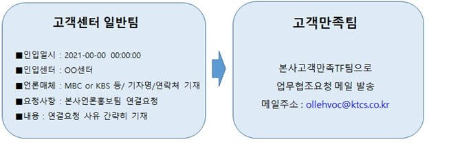

■ 언론사(기자,작가 등), 고위 공직자 문의 대응 프로세스
1. 고객센터 일반팀
- 첨부 된 양식 준용하여 탐색, 작성하여 고객만족팀으로 전달
※인입(주말포함)시 즉시 공유
① 언론사(기자,작가 등), 고위공직자 문의 시 (추가) : 첨부파일 양식 작성 후
고객만족팀으로 전달 (받은 파일 폴더에 있음) -> 파일 없을 경우 팀장에게 요청
② 언론사 인입되어 본사 홍보팀 또는 관련부서 연결요청 시 :
아래 이미지 양식 작성하여 고객만족팀으로 전달

■ kt언론홍보팀 요청사항(24년 8월 12일 ver)
- kt언론홍보팀엔 언론분야에 따라 크게 3가지 부서로 구분 ( 1.지면 / 2. 방송 / 3. 온라인 )
- 온라인 언론매체는 광범위해서 kt언론홍보팀에서 직접적인 컨택 불가
→ 1. 지면 / 2. 방송 관계자는 기존과 동일하게 소속 고객만족팀으로 전달.
단, 온라인 언론매체 인입되어 ⓑ 문의유형으로 연결요청시 고객만족팀 선상의후 "ktstory@kt.com" 메일 주소 안내,
위 메일주소로 문의코자하는 내용을 고객이 직접 기재 후 메일 발송하면 kt언론홍보팀에서 직접 회신함을 안내 후
상담 종결 ( 소속 고객만족팀으로 SR이관 불필요 )